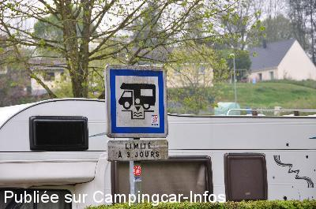

ASN = Aire de services avec stationnement nuit possible de :
CLÈRES
(N° 699)
Accès/adresse :
Rue Edmond Spalikowski
76690 CLÈRES
76690 CLÈRES
Latitude : (Nord) 49.60215° Décimaux ou 49° 36′ 7′′
Longitude : (Est) 1.11675° Décimaux ou 1° 7′ 0′′
Tarif : 2015
Stationnement gratuit
Eau ou 6 H d'électricité : 5 €
Jeton en vente à l’office de tourisme et dans les commerces
Services :


Commerces
Autres informations :
15 emplacements
3 bornes alimentent 4 emplacements
Stationnement limité 3 jours
Tél +33 (0)235 332 331
http://www.mairie-cleres.fr/crbst_26.html
Le 04/06/2015 par Dandunord

Le 04/06/2015 par
Le 26/04/2011 par Cody Karson
Le 26/04/2011 par Cody Karson
Le 15/04/2009 par
Le 22/08/2006 par christian37_59
de
Dandunord
le 04/06/2015 :
Nous y avons passé la nuit du 24 au 25/04/2015 qui fut très calme.
Aire tranquille, composée de petits "box" pour 2 camping-cars, près du stade et à 500 m du centre du village (très joli).
Nous n'y avons vu aucune indication mentionnant que cette aire n'était ouverte que de mai à octobre. Le site internet de la ville ne le mentionne pas non plus.
Elle serait donc ouverte toute l'année ?
Nous y avons passé la nuit du 24 au 25/04/2015 qui fut très calme.
Aire tranquille, composée de petits "box" pour 2 camping-cars, près du stade et à 500 m du centre du village (très joli).
Nous n'y avons vu aucune indication mentionnant que cette aire n'était ouverte que de mai à octobre. Le site internet de la ville ne le mentionne pas non plus.
Elle serait donc ouverte toute l'année ?
de
AL
le 26/10/2013 :
Aire gratuite et facile d'accès. Endroit très calme. A recommander
Aire gratuite et facile d'accès. Endroit très calme. A recommander
de
Alex & Justine Wilkinson
le 22/08/2012 :
Stayed over on the way to Calais, lovely village, very quiet, thanks to the community for providing this facility for camping cars
Stayed over on the way to Calais, lovely village, very quiet, thanks to the community for providing this facility for camping cars
de
MICHOU ET JEAN PAUL 59
le 30/06/2012 :
de passage au mois de mai 2012, aire très calme et propre, située à proximité d'un ilot de verdure, près des commerces
village typique de normandie, commercants super sympas
un grand merci à la commune
de passage au mois de mai 2012, aire très calme et propre, située à proximité d'un ilot de verdure, près des commerces
village typique de normandie, commercants super sympas
un grand merci à la commune
de
nounours 41
le 10/10/2011 :
Aire propre et calme , plate et de niveau , gratuite pour le stationnement , proche des commerces , chaque emplacement pouvant recevoir 2 camping cars soit 20 au total .les jetons sont a retirer chez les commerçants dont la liste est affichée sur le panneau d'accueil
Aire propre et calme , plate et de niveau , gratuite pour le stationnement , proche des commerces , chaque emplacement pouvant recevoir 2 camping cars soit 20 au total .les jetons sont a retirer chez les commerçants dont la liste est affichée sur le panneau d'accueil
de
Max
le 19/08/2011 :
Aire sympathique,utilisée 2 fois cette année. Merci à la
commune de bien vouloir nous accueillir. Commerces à proximité et agréables.
Aire sympathique,utilisée 2 fois cette année. Merci à la
commune de bien vouloir nous accueillir. Commerces à proximité et agréables.
de
Michel et Dominique
le 10/07/2011 :
Une aire agréable et calme située à 500 M du centre ville ( nombreux commerces ) et à 700 m du parc zoologique
Une aire agréable et calme située à 500 M du centre ville ( nombreux commerces ) et à 700 m du parc zoologique
de
sebastien et julie
le 04/03/2010 :
Aire très calme, parfaite pour y passer la nuit, non loin du village pour le pain le matin! Possibilité de passer 3 nuits de suite et services sur place. L'eau et l'électricité sont sur une borne à monnayeur. Je ne me souviens pas des tarifs dsl.
Aire très calme, parfaite pour y passer la nuit, non loin du village pour le pain le matin! Possibilité de passer 3 nuits de suite et services sur place. L'eau et l'électricité sont sur une borne à monnayeur. Je ne me souviens pas des tarifs dsl.
de
cc80
le 13/04/2009 :
Passés sur cette aire le 12 et 13 avril, nous nous sommes retrouvés entre Francais, Belges et Anglais très sympas et qui engagent la conversation. Les services sont toujours gratuits et des bornes par jetons ont été installées pour la fourniture de courant (2€ pour 6 heures d'électricité ce qui est très bien). La gratuité de stationnement est toujours de mise (3 jours maxi). Les jetons sont à retirer à l'OT, les deux boulangeries et le café en face de l'église (ouvert même le dimanche de Pâques). Profitez de l'accueil de la commune pour y faire vos achats et allez visiter le parc annimalier, vous y passerez un très bon moment de détente
Passés sur cette aire le 12 et 13 avril, nous nous sommes retrouvés entre Francais, Belges et Anglais très sympas et qui engagent la conversation. Les services sont toujours gratuits et des bornes par jetons ont été installées pour la fourniture de courant (2€ pour 6 heures d'électricité ce qui est très bien). La gratuité de stationnement est toujours de mise (3 jours maxi). Les jetons sont à retirer à l'OT, les deux boulangeries et le café en face de l'église (ouvert même le dimanche de Pâques). Profitez de l'accueil de la commune pour y faire vos achats et allez visiter le parc annimalier, vous y passerez un très bon moment de détente
de
j-c
le 20/05/2008 :
Aire de stationnement très agréable. Aire de services artisanale simple et bien conçue. Tous commerces à moins de 500 m. Merci à la municipalité de CLERES.
Aire de stationnement très agréable. Aire de services artisanale simple et bien conçue. Tous commerces à moins de 500 m. Merci à la municipalité de CLERES.
de
michèle
le 10/04/2007 :
Après avoir acheté notre premier CC d'occasion, nous nous sommes arrêtés pour notre première sortie à Clères. Quel plaisir d'être au calme dans une aire très bien aménagée, facile à trouver. Aucun bruit la nuit.
Après avoir acheté notre premier CC d'occasion, nous nous sommes arrêtés pour notre première sortie à Clères. Quel plaisir d'être au calme dans une aire très bien aménagée, facile à trouver. Aucun bruit la nuit.